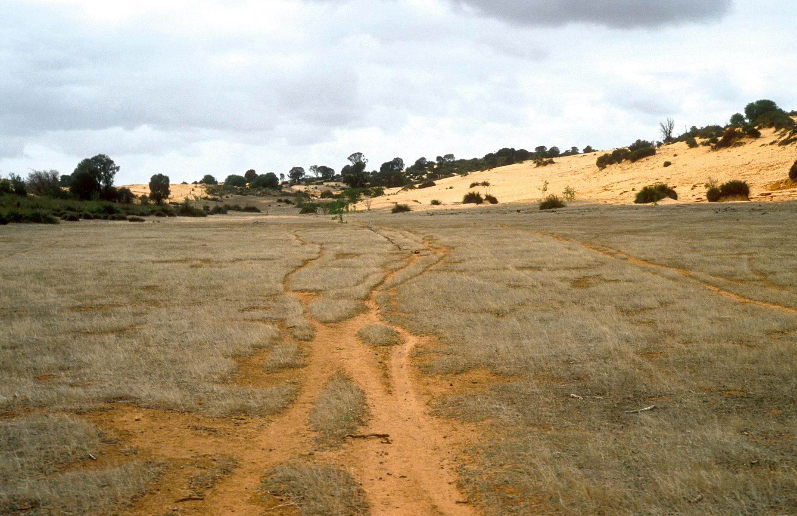
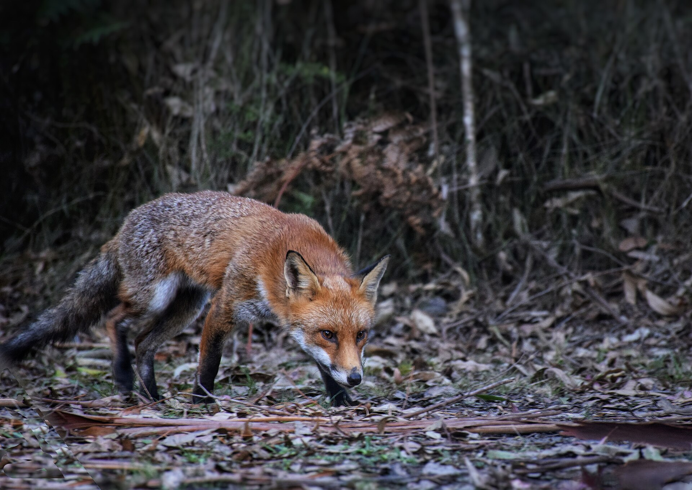
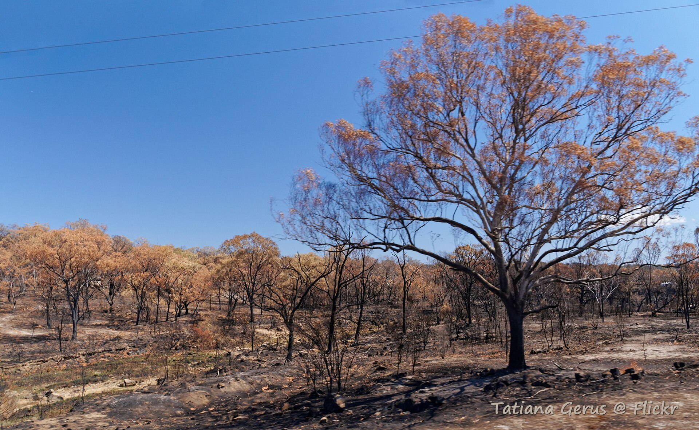
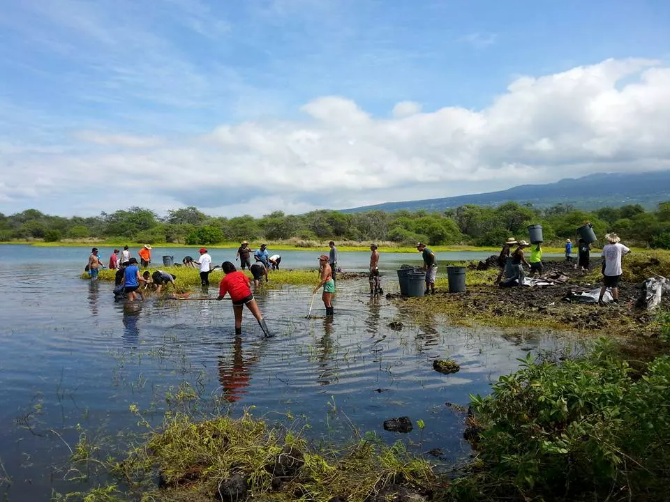
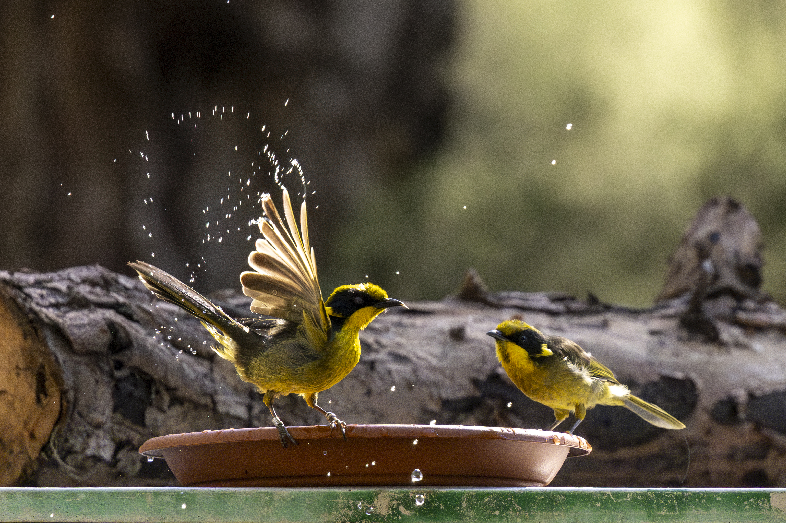

Australia is home to extraordinary wildlife,
much of it found nowhere else on Earth.
But many native animals now face an uncertain future.
Explore which animals are most at risk,
where they are found, the pressures they face,
and Australia's progress towards conservation.
FIT3179 Data Visualisation 2 ·
Monash University Malaysia
CHAPTER 01 / THE BIODIVERSITY CRISIS
The scale of the problem
Some animal groups have more threatened taxa
than others. But the number of listings is only
part of the story. Their level of risk also matters.
FIGURE 01 / CONSERVATION STATUS
Threatened animals do not all face the same risk
Wider columns represent more threatened taxa.
The coloured sections show the proportion
belonging to each conservation status.
Hover for exact values.
Click an animal group to highlight it
and double-click to reset.
What stands out:
Birds have the most listed threatened taxa
(164), but the severity of listings
differs across groups.
Source: EPBC Threatened Species Lists,
28 August 2026.
Listed taxa can include subspecies.
FIGURE 02 / POPULATION CHANGE
A long-term decline in monitored bird populations
This index tracks the relative abundance
of monitored Australian bird populations
between 1985 and 2022.
Hover over the points to see the population
index and its lower and upper estimates.
What stands out:
The bird population index fell from 100
in 1985 to approximately 44.2 in 2022,
a decline of around 55.8%.
Source: Threatened Species Index
(TSX 2025), Birds export.
This index represents monitored populations,
not a census of all Australian birds.
The sample includes near-threatened taxa.
FIGURE 03 / CRITICAL RISK
How does critical risk compare between animal groups?
Each animal group contains 100 dots.
Dark purple dots show the approximate
percentage of its threatened taxa
classified as Critically Endangered.
Each dot represents approximately 1%.
Hover to see the exact values.
What stands out:
43.4% of threatened invertebrate taxa
are Critically Endangered,
compared with approximately 8.0%
of threatened mammals.
Source: EPBC Threatened Species Lists,
28 August 2026.
Percentages are calculated within
each threatened animal group.
BEYOND THE NUMBERS
Meet the wildlife behind the data
These animals illustrate what is at stake
when we talk about Australia's biodiversity.
WILDLIFE NOTE / 01
Birdlife under pressure
Australia's birds play important roles
in pollination, seed dispersal
and insect control.
Did you know?
The EPBC dataset includes 164
threatened bird taxa, including
18 that are Critically Endangered.
WILDLIFE NOTE / 02
Life among the eucalyptus
Koalas depend on suitable eucalyptus
habitat for food and shelter.
Did you know?
Koalas have specialised digestive systems
that help process fibrous eucalyptus leaves.
CHAPTER 02 / THE GEOGRAPHY
A geography of vulnerability
Threatened wildlife occurs across Australia's
forests, wetlands, deserts and coastlines.
These maps explore how threatened-taxon listings,
observations and conservation areas vary
across the country.
FIGURE 04 / AREA-NORMALISED GEOGRAPHY
Where are threatened taxa most concentrated
relative to land area?
This map compares the number of nationally
listed threatened animal taxa per
100,000 km² of state or territory land area.
Darker colours represent higher
area-normalised values.
Hover over each state to see its original count,
land area and normalised value.
The colour legend uses a logarithmic scale
because the ACT is much smaller than
the other jurisdictions.
What stands out:
Tasmania has approximately 163.7
listed threatened taxa per 100,000 km²,
higher than many mainland states.
The ACT has an especially large ratio
because its land area is very small.
These figures do not directly measure
animal abundance or conservation risk.
Sources: EPBC Threatened Species Lists (2026),
Geoscience Australia land-area figures,
and ABS state boundaries (2021).
Taxa can occur in multiple states.
FIGURE 05 / BIRD OBSERVATION HOTSPOTS
Where have Australia's threatened birds been observed?
This map shows recorded observations
of three threatened Australian bird species
between 2015 and 2025.
Each hexagon covers a similar geographic area.
Darker hexagons represent more
recorded observations.
Choose a bird species using the dropdown.
Hover over a hexagon to see the number
of observation records.
Hexagons are approximately 50 km
across from corner to corner.
What stands out:
Observation hotspots vary between
Swift Parrot, Regent Honeyeater and
Orange-bellied Parrot.
More observations do not necessarily
mean more individual birds:
survey effort and repeated sightings
influence the results.
Source: Australian biodiversity occurrence
records, 2015–2025, filtered to include
georeferenced observations.
The map shows recorded observations,
not estimated population density.
FIGURE 06 / PROTECTED AREAS
How much of Australia's land is protected?
Protected areas play an important role
in conserving Australia's biodiversity.
This map compares the total protected
land area across Australia's states and
territories using CAPAD 2024 data.
Larger circles represent more protected land,
while darker circles show a higher percentage
of land protected within each jurisdiction.
Hover over a circle to see protected land
in square kilometres and the percentage
of land protected.
Each circle represents the whole state
or territory, not individual protected-area
locations.
What stands out:
Western Australia has the largest total
protected land area, at approximately
786,742 km².
However, Tasmania has a greater proportion
of land protected, at 42.8%, compared
with Western Australia's 31.1%.
Source:
Australian Government, CAPAD 2024
.
Terrestrial protected-area statistics
by jurisdiction.
Map boundaries: Australian Bureau
of Statistics, 2021.
FIGURE 07 / THE BUSHFIRE FOOTPRINT
Where were larger fire footprints mapped
in southeastern Australia?
The 2019–20 bushfire season placed enormous
pressure on Australian ecosystems.
This map highlights selected larger mapped
fire footprints in New South Wales and Victoria
during the 2019–20 financial year.
Orange areas represent simplified fire
boundaries, not fire severity.
Use the dropdown to view both states
or select NSW or Victoria individually.
Hover over the orange areas for details.
What stands out:
Many larger mapped fire footprints occur
along the eastern and southeastern regions
of NSW and Victoria.
These landscapes support important wildlife
habitats, making bushfire exposure a concern
for biodiversity conservation.
Source:
Australian Government,
2019–20 Financial Year Bushfire Boundaries
.
Selected NSW and Victoria polygons only.
Smaller source polygons were excluded,
and the remaining coverage was merged
and approximated using a 3 km grid.
The map does not represent every fire
or the severity of burning.
FROM THE FIELD / ENVIRONMENTAL PRESSURES
The pressures behind the patterns
The numbers tell us how many species face
each threat. These photographs illustrate
three environmental pressures found in
Australia's wildlife threat assessments.

01 / Habitat loss
Land clearing can reduce and
fragment wildlife habitat.
Photo: John Coppi / CSIRO, 1992.
CC BY 3.0

02 / Invasive species
Introduced predators can threaten
native Australian animals.
Photo: Shylu007, Victoria, 2019.
CC BY-SA 4.0

03 / Bushfires
Fire can alter ecosystems and
place additional pressure on
threatened wildlife.
Photo: Tatters, NSW, 2019.
CC BY-SA 2.0
CHAPTER 03 / THE THREATS
What is putting wildlife at risk?
Australia's threatened animals face more
than one kind of danger.
Habitat changes, invasive species, fires
and climate pressures affect different
animal groups in different ways.
FIGURE 08 / THREATS BY ANIMAL GROUP
Which threats affect each animal group most?
This heatmap compares eight major threats
across six animal groups.
Each cell shows the percentage of assessed
taxa within that group affected by a
particular threat.
Darker cells indicate higher percentages.
Hover over each cell to see the number
of affected taxa and the total assessed.
A taxon can face multiple threats,
so the percentages do not add up to 100%.
What stands out:
Invasive species and diseases affect
80.4% of assessed mammal taxa.
Habitat loss is recorded for 74.5%
of assessed fish taxa, while changed
water regimes affect 62.7%.
Source:
Ward et al. (2021)
.
Data reflect the study's earlier threat
assessments, including EPBC status
information from 2018.
Only fauna were included.
Percentages use the number of assessed
taxa within each animal group.
FIGURE 09 / OVERLAPPING THREATS
Wildlife rarely faces just one threat
Habitat loss, invasive species, fire
and other pressures often affect
the same animal.
This chart shows the most common
combinations of five selected threats
recorded for Australia's imperilled fauna.
64 taxa
Face the most common combination:
habitat loss, invasive species/disease
and adverse fire regimes.
335 / 456
Have two or more of the five
selected threat categories recorded.
25 profiles
Different non-empty combinations
occurred. The chart shows the
12 most frequent.
How to read:
Each numbered column represents one exact
combination among the five threats shown.
The bar above counts the taxa with that
combination. Filled dots indicate threats
recorded together, and connecting lines
link them.
Threat recorded
Threat not recorded
Hover over the bars or dots for the
exact combination and number of taxa.
Categories not shown here can still
affect these animals.
What stands out:
The most frequent profile includes
habitat loss, invasive species/disease
and adverse fire regimes together
(64 taxa).
Conservation often requires addressing
several environmental pressures at once.
Source:
Ward et al. (2021)
,
supplementary species-threat assessment matrix.
Based on 456 unique assessed fauna taxa.
Five of the eight broad threat categories
are analysed. Only the 12 largest
of 25 observed non-empty combinations
are plotted (365 taxa).
Combinations are exact only among these
five selected threats.
FIGURE 10 / COMPOUND PRESSURES
Nearly three in four assessed fauna taxa
face multiple threats
Environmental pressures rarely occur
in isolation.
This waffle chart shows how many of
five selected threat categories were
recorded for each of 456 assessed
Australian fauna taxa.
Every square represents approximately
1% of assessed taxa.
Hover over a square to see the exact
number and percentage of taxa.
Squares are rounded to approximately
1% each, so visualised square counts
are approximate.
What stands out:
About 73.5% of the assessed fauna taxa
face two or more selected threats.
Almost half (46.7%) face at least three.
This highlights the need to address
multiple environmental pressures rather
than focusing on a single threat.
Source:
Ward et al. (2021)
,
supplementary species-threat assessment data.
Analysis includes 456 unique fauna taxa.
Only five of eight broad threat categories
are counted here.
A value of zero means none of these five
categories were recorded, not that the taxon
faces no threats.
The number of recorded threat categories
does not measure their severity.
CHAPTER 04 / THE FUTURE
Can conservation turn the tide?
The scale of biodiversity loss is serious,
but conservation action can make a difference.
Understanding population trends, protected areas
and conservation targets helps show how much
progress has been made and what remains to be done.
FROM THE FIELD / CONSERVATION IN ACTION
Protecting habitats and supporting recovery
Conservation involves both restoring ecosystems
and helping threatened animal populations recover.

CONSERVATION / 01
Restoring habitats
Wetlands and other ecosystems
provide important habitat for
Australia's native wildlife.
Restoration can help recover
some ecological functions lost
through environmental change.
Photograph: Nick Carson.
Wikimedia Commons, public domain.

CONSERVATION / 02
Supporting species recovery
The Helmeted Honeyeater is
an example of a threatened
Australian bird supported through
captive breeding and reintroduction.
Such programmes aim to strengthen
vulnerable populations.
Photograph: Dylan Sanusi-Goh.
Wikimedia Commons, CC BY 4.0.
FIGURE 11 / TRACKING WILDLIFE POPULATIONS
Four animal groups. Four decades of change.
The Threatened Species Index tracks changes
in the relative abundance of monitored
threatened and near-threatened wildlife
populations.
These four panels compare birds, mammals,
reptiles and amphibians from 1985 to 2022.
All groups begin with an index of 100,
making their long-term changes easier
to compare.
Population index
Lower and upper estimates
1985 baseline = 100
Birds
-56%Approximate index change since 1985
Mammals
-38%Approximate index change since 1985
Reptiles
-94%Pilot index; interim results
Amphibians
-97%Approximate index change since 1985
Reading the index:
The value 100 represents the 1985 baseline.
A value of 50 means the monitored group
has approximately half its baseline relative
abundance.
These are indices, not actual counts
of individual animals.
Hover along the coloured lines to see
each year's population index and its
lower and upper estimates.
All four panels use the same vertical
scale for easier comparison.
What stands out:
All four monitored fauna groups show
substantial long-term declines.
The declines are particularly severe
in the amphibian and pilot reptile
indices, while the mammal index
shows a smaller overall decline.
Source: Threatened Species Index,
TSX 2025 exports for Birds, Mammals,
Reptiles and Amphibians.
Indices cover monitored populations,
not every species or individual animal
in Australia.
Reptile results come from a pilot index
and should be interpreted cautiously.
FIGURE 12 / CONSERVATION PROGRESS
Australia's protected land has more
than doubled since 2004
Australia's protected-area network
has grown substantially over the
past two decades.
This chart tracks the share of
Australia's landmass covered by
terrestrial protected areas between
2004 and 2024, using historical CAPAD
reporting data.
The lower panel shows how much the
protected share increased between reports.
2004 / STARTING POINT
10.52%Australian landmass protected
Protected land coverage
Reporting snapshot
Larger increases between reports
Hover over the dots in the upper chart
to inspect the percentage protected
in each reporting year.
Hover over the bars below to see
the change in percentage points.
Only reporting years are observed.
Lines between years are visual guides,
not annual measurements.
A CONTRIBUTOR TO CONSERVATION GROWTH
Indigenous Protected Areas have played
an important role
According to Australian Bureau of Statistics
reporting, Indigenous Protected Areas expanded
from approximately 2% of Australia's landmass
in 2004 to around 11% in 2024.
These areas are managed by Aboriginal
and Torres Strait Islander groups in
accordance with Traditional Owners' objectives.
What stands out:
Australia's terrestrial protected-area share
increased from 10.52% in 2004
to 22.57% in 2024.
This represents a gain of 12.05
percentage points over two decades.
Sources: Australian Government,
historical Collaborative Australian Protected
Areas Database (CAPAD) reporting,
2004–2024.
Indigenous Protected Area context:
Australian Bureau of Statistics.
Reporting years are snapshots,
not a continuous annual data series.
FIGURE 13 / TOWARDS 30%
Australia is closer to 30% protected land,
but a gap remains
Protecting land is one important part
of biodiversity conservation.
This final visualisation compares Australia's
2024 terrestrial protected-land share
with a 30% conservation benchmark for 2030.
It also compares the average historical
rate of expansion with the average rate
that would be needed to reach that benchmark.
PROTECTED LAND / 2024
22.57%Recorded terrestrial protection
2030 BENCHMARK
30%Reference conservation target
REMAINING GAP
7.43 ppAdditional percentage points needed
Protected share / historical pace
Remaining gap / required pace
The upper chart shows the protected share
and the remaining gap to 30%.
The lower chart compares two average
annual percentage-point increases.
Hover over the bars for further detail.
The challenge:
Australia had protected 22.57% of its
landmass by 2024, leaving a gap
of 7.43 percentage points to reach 30%.
Reaching this benchmark by 2030
would require an average increase
of approximately 1.24 percentage points
per year from the 2024 level.
That is about twice the average annual
increase recorded between 2004 and 2024.
What stands out:
Protected-area coverage has grown,
but meeting a 30% benchmark would
require faster expansion than the
average pace of the previous two decades.
Protecting land is important,
but the ecological quality, location
and management of protected areas
also matter for wildlife recovery.
Sources: CAPAD historical protected-area
reporting (2004–2024), as analysed
in Figure 12.
Calculations:
30.00 - 22.57 = 7.43 percentage points;
7.43 / 6 = approximately 1.24
percentage points per year.
The comparison is illustrative:
it is not a forecast of future
protected-area growth.
THE STORY DOES NOT END HERE
Protecting wildlife means protecting
the places and systems that sustain it.
Australia's threatened wildlife faces
overlapping environmental pressures
and substantial population declines.
Expanding protected areas is part
of the response, but effective conservation
also depends on habitat quality,
managing threats, long-term monitoring
and supporting species recovery.
ABOUT THE DATA
This visualisation combines data from
Australian EPBC threatened species lists,
the Threatened Species Index,
biodiversity observation records,
the CAPAD protected-area database,
national bushfire boundaries and
Ward et al. (2021).
Different charts use different reporting
periods, definitions and populations.
Values should not be interpreted
as measurements of the same sample.
Counts of threatened taxa do not represent
individual animals. Occurrence records
reflect recorded sightings and can be
influenced by survey effort. Threat categories
can overlap. Population indices measure
relative changes in monitored populations.